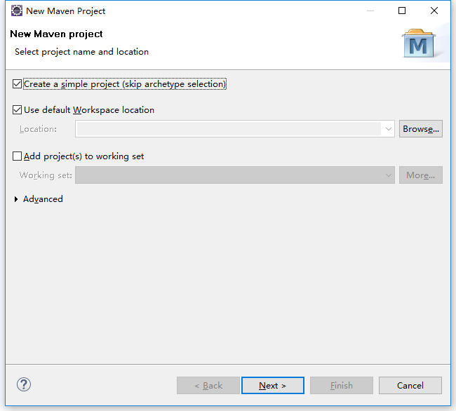
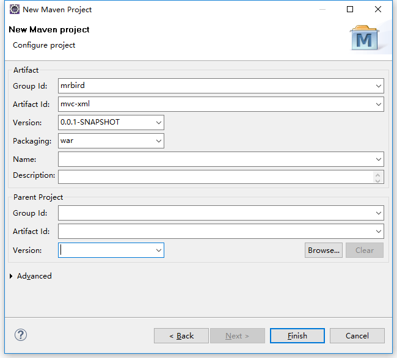
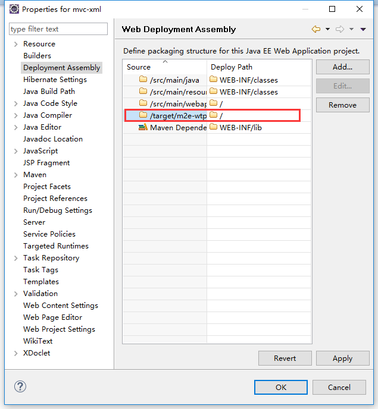
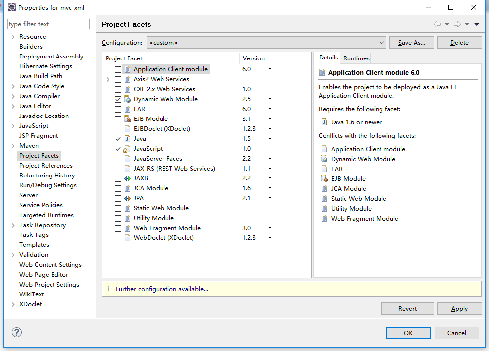
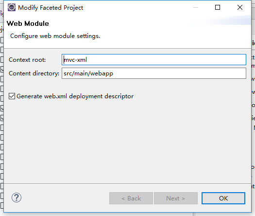
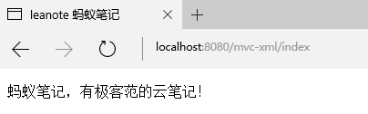

guide
下图展示了请求在Spring MVC中的过程：
环境准备
使用Maven构建Spring web MVC project。
新建Maven Project（选中skip archetype selection）:

点击next，然后填写Group Id和Artifact Id，打包方式为war：

finish后，右击项目，选择properties，选中Deployment Assembly，移除选中的路径：

apply后选择Project Facets，勾选Dynamic Web Module，点击下方的Further configuration avaiable：

如下填写后确定即可：

准备好后，在pom中引入依赖以及配置tomcat插件：
XML配置搭建
web.xml中配置DispatcherServlet：
配置applicationContext.xml：
编写一个最简单的cotroller：
编写一个最简单的页面：
一切准备就绪，启动项目，访问http://localhost:8080/mvc-xml/index：

JavaConfig配置搭建
配置DispatcherServlet：
WebConfig：
新的WebConfig类还扩展了WebMvcConfigurerAdapter并重写了其configureDefaultServletHandling()方法。通过调用DefaultServletHandlerConfigurer的enable()方法，我们要求DispatcherServlet将对静态资源的请求转发到Servlet容器中默认的Servlet上，而不是使用DispatcherServlet本身来处理此类请求。
RootConfig：
Controller和JSP页面同上。